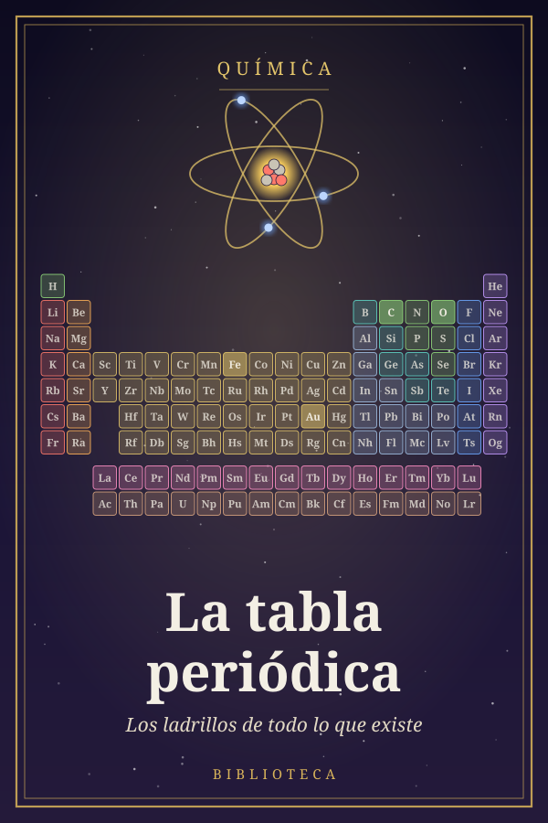

La tabla periódica
Los ladrillos de todo lo que existe
Capítulo 1¿De qué está hecho todo?
Mira a tu alrededor. La mesa, el aire que respiras, el agua del vaso, la pantalla en la que quizá lees esto, tu propia mano. Parecen cosas completamente distintas, y sin embargo todas están hechas con las mismas piezas. En la naturaleza hay unas noventa clases de piezas básicas, y los científicos han fabricado unas cuantas más en el laboratorio. En total, hoy conocemos 118. Se llaman elementos químicos.
Con esas pocas piezas se construye todo lo que existe, igual que con las 27 letras del alfabeto se escriben todas las palabras del español, desde «sol» hasta «esternocleidomastoideo». La tabla periódica es la lista ordenada de esas piezas. Pero no es una lista cualquiera, como la de la compra: es un mapa. Cada elemento ocupa un lugar que no es casual, y ese lugar dice mucho de cómo se comporta. En este libro veremos cómo se descubrieron los elementos, cómo se llegó a ordenarlos y por qué ese orden funciona tan bien.
Elementos, compuestos y mezclas
Un elemento es una sustancia que no se puede descomponer en otras más sencillas por medios químicos: ni calentándola, ni quemándola, ni haciéndola reaccionar con ácidos. El oro, el oxígeno, el hierro y el carbono son elementos. Hoy sabemos por qué: cada elemento está hecho de una sola clase de átomo, la partícula más pequeña que conserva sus propiedades.
Cuando dos o más elementos se unen químicamente, forman un compuesto. El agua es un compuesto de hidrógeno y oxígeno; la sal de cocina, de sodio y cloro. En un compuesto los elementos siempre están en la misma proporción: en el agua hay siempre dos átomos de hidrógeno por cada uno de oxígeno, de ahí su fórmula, H2O. Y lo más sorprendente es que un compuesto no se parece en nada a sus ingredientes.
Una mezcla, en cambio, es simplemente revolver sustancias sin que se unan entre sí y sin una proporción fija. El aire es una mezcla, sobre todo de nitrógeno y oxígeno. El agua del mar es una mezcla de agua y sales. Las mezclas se pueden separar con métodos físicos, sin química: si dejas evaporar agua de mar, la sal se queda en el fondo.
Tierra, agua, aire y fuego
La pregunta de qué está hecho el mundo es muy antigua. Hacia el siglo V antes de Cristo, el filósofo griego Empédocles, que vivía en Sicilia, propuso que todo estaba formado por cuatro «raíces»: la tierra, el agua, el aire y el fuego. Un siglo después, Aristóteles hizo suya la idea y añadió un quinto elemento, el éter, del que estarían hechos los cielos. De ahí viene la palabra quintaesencia, la «quinta esencia».
Por la misma época, Demócrito defendió otra idea: que la materia estaba hecha de partículas diminutas e indivisibles, a las que llamó átomos, que en griego significa «sin cortar». Era una intuición brillante, pero no tenía forma de demostrarla, y la autoridad de Aristóteles pesó mucho más. Los cuatro elementos dominaron el pensamiento europeo durante casi dos mil años.
Tenía su lógica. Si quemas un tronco, sale humo (aire), chisporrotea la savia (agua), hay llamas (fuego) y quedan cenizas (tierra). Parecía que el tronco se descomponía en sus cuatro elementos. El problema es que era una idea que explicaba cualquier cosa y no predecía nada.
Los alquimistas
Durante la Edad Media, en el mundo islámico y luego en Europa, los alquimistas intentaron transformar unas sustancias en otras. Su gran sueño era convertir metales vulgares, como el plomo, en oro, y encontrar un elixir de la eterna juventud. No lo consiguieron, claro, pero inventaron aparatos y técnicas que la química usa todavía: la destilación, los hornos, los baños de agua caliente. La palabra alquimia viene del árabe, igual que alambique, alcohol y álcali.
En 1669, un alquimista de Hamburgo llamado Hennig Brand buscaba la piedra filosofal en un lugar poco prometedor: la orina. Hirvió grandes cantidades hasta dejarla en una pasta, la calentó con fuerza y obtuvo una sustancia blanca que brillaba en la oscuridad. La llamó fósforo, «portador de luz» en griego. Es el primer elemento del que conocemos el descubridor, la fecha y el lugar.
Capítulo 2Lavoisier pone orden
En 1661, el irlandés Robert Boyle publicó El químico escéptico, un libro en el que se burlaba de los cuatro elementos y de los alquimistas. Propuso una definición práctica: un elemento es aquello que no se puede separar en nada más simple. Era un buen punto de partida, pero Boyle no dijo cuáles eran. Hizo falta más de un siglo, y un francés muy meticuloso, para hacer la primera lista.
El hombre de la balanza
Antoine-Laurent de Lavoisier nació en París en 1743 en una familia rica. Trabajaba como recaudador de impuestos para la Ferme générale, una compañía privada que cobraba tributos en nombre del rey, y con ese dinero se montó el mejor laboratorio de Europa. Le ayudaba su esposa, Marie-Anne Paulze, que traducía para él los libros ingleses, tomaba notas de los experimentos y dibujaba los aparatos con gran precisión, porque había estudiado pintura.
El arma secreta de Lavoisier era la balanza. Pesaba todo antes y después de cada experimento, con los recipientes bien cerrados para que no se escapara ningún gas. Así descubrió algo fundamental: en una reacción química la masa total no cambia. Si quemas algo en un frasco cerrado, el frasco pesa lo mismo antes y después. La materia no aparece ni desaparece; solo se reorganiza. Es la ley de conservación de la masa, que suele resumirse con una frase popular: «nada se pierde, nada se crea, todo se transforma».
El agua no es un elemento
Con su balanza, Lavoisier fue derribando los cuatro elementos uno a uno. Demostró que el aire es una mezcla de dos gases: uno que mantiene la respiración y el fuego, y otro que no. Al primero lo llamó oxígeno; al segundo, ázoe, «sin vida», que hoy llamamos nitrógeno. En 1783 demostró que el agua tampoco es un elemento: se forma al quemar hidrógeno con oxígeno y se puede volver a separar en esos dos gases. Y explicó que el fuego no es una sustancia, sino una reacción: la combinación rápida de algo con el oxígeno.
Lavoisier también cambió la forma de hablar de la química. En 1787, con otros tres químicos franceses, propuso un sistema de nombres lógico: el nombre de un compuesto debía decir de qué estaba hecho. Así nacieron palabras como óxido, sulfato o cloruro, que usamos todavía. Antes, la misma sustancia podía llamarse «aceite de vitriolo», «flores de cinc» o «azúcar de Saturno», según el libro.
La primera lista
En 1789, el año de la toma de la Bastilla, Lavoisier publicó su Tratado elemental de química. Incluía una tabla con 33 «sustancias simples», la primera lista moderna de elementos. La dividió en cuatro grupos: los gases y sustancias especiales, los no metales, los metales y las «tierras». Visto desde hoy, acertó mucho. Veintitrés de sus sustancias son elementos de verdad. Tres eran elementos que todavía nadie había conseguido separar de sus compuestos, y Lavoisier lo intuyó: los llamó «radicales». Cinco de sus «tierras» resultaron ser compuestos, óxidos de metales que aún no se sabían aislar. Y dos no eran sustancias en absoluto: la luz y el «calórico», un supuesto fluido del calor.
Un final trágico
Durante la Revolución francesa, los antiguos recaudadores de impuestos fueron detenidos y acusados de robar al pueblo. Lavoisier fue juzgado y guillotinado en París el 8 de mayo de 1794, con cincuenta años. Al matemático Joseph-Louis Lagrange se le atribuye este lamento: «Bastó un instante para cortar esa cabeza, y quizá cien años no basten para producir otra igual». Si quieres saber más sobre aquellos años, lo cuenta el libro La Revolución francesa.
Su obra, en cambio, sobrevivió y se extendió muy deprisa. En 1798 ya se publicó en Madrid la traducción al español del Tratado, hecha por Juan Manuel Munárriz, un oficial de artillería. Y es que España, en esos años, no se limitaba a leer química: también estaba descubriendo elementos.
Capítulo 3Tres elementos con acento español
De los elementos que se descubrieron en el siglo XVIII, tres tienen una historia estrechamente ligada a España y a sus territorios de América: el platino, el wolframio y el vanadio. Son historias de expediciones científicas, barcos capturados, laboratorios en pueblos de montaña y, en un caso, de una injusticia que tardó décadas en repararse.
El platino: la «platina» de Ulloa
En 1735 partió de Cádiz una expedición científica con una misión ambiciosa: medir con precisión un trozo de meridiano cerca del ecuador, en el virreinato del Perú, para averiguar la forma exacta de la Tierra. Viajaban en ella dos jóvenes marinos españoles, Jorge Juan y Antonio de Ulloa, junto a varios científicos franceses. Pasaron casi diez años en los Andes.
En las minas de oro del Chocó, en la actual Colombia, los mineros encontraban mezclados con el oro unos granitos de un metal blanquecino, muy pesado, que no se fundía ni en los hornos más potentes. Lo consideraban un estorbo y lo llamaban con desprecio platina, «platita», como una plata de segunda. Se cuenta que las autoridades llegaron a ordenar que se tirara a los ríos para que nadie lo usara para falsificar el oro.
Ulloa describió aquel metal extraño en su relato del viaje. De regreso a España, en 1745, el barco en que viajaba fue capturado por los ingleses, que estaban en guerra con España, y sus papeles fueron confiscados. Pero en Londres los científicos lo trataron con respeto, le devolvieron los documentos y lo nombraron miembro de la Royal Society, la sociedad científica más prestigiosa de Inglaterra. En 1748 publicó en Madrid su Relación histórica del viaje a la América meridional, con la primera descripción de la platina impresa en Europa. Por eso se considera a Ulloa el primer europeo que describió el platino, aunque por los mismos años un inglés, Charles Wood, llevó muestras a Inglaterra desde Jamaica.
Trabajar el platino era dificilísimo, porque funde a 1.768 °C. En la década de 1780, el químico francés François Chabaneau, contratado por la Corona española, consiguió por fin purificarlo y hacerlo maleable, primero en Bergara y después en un laboratorio de Madrid. Se cuenta que con aquel platino se hizo un cáliz que se regaló al papa Pío VI.
El wolframio: dos hermanos en Bergara
En 1776, la Real Sociedad Bascongada de Amigos del País, una asociación de ilustrados vascos, fundó en Bergara (Gipuzkoa) el Real Seminario, una escuela con uno de los laboratorios de química más modernos de Europa. Allí trabajaron los hermanos Juan José y Fausto Elhuyar, riojanos de familia vasca, que habían estudiado química y minería en Francia, Alemania y Suecia.
En 1781, el sueco Scheele había obtenido un ácido desconocido de un mineral pesado llamado tungsten, «piedra pesada» en sueco. Sospechaba que contenía un metal nuevo, pero no logró separarlo. Los hermanos Elhuyar analizaron otro mineral, la wolframita, sacaron de él el mismo ácido y en 1783, calentándolo con carbón, obtuvieron por primera vez el metal. Lo publicaron ese mismo año con un título muy claro: Análisis químico del volfram y examen de un nuevo metal que entra en su composición.
El nombre viene del alemán Wolf Rahm, «espuma de lobo». Los mineros sajones llamaban así a ese mineral porque, al fundir el estaño, se «comía» parte del metal, como un lobo que devora una oveja. Gracias a los Elhuyar, el símbolo químico de este elemento es W, y en español su nombre recomendado es wolframio, aunque también se acepta tungsteno. Es el metal que funde a mayor temperatura, 3.422 °C, y por eso se usó durante un siglo en los filamentos de las bombillas.
En septiembre de 2026, Bergara celebró por primera vez el Día del Wolframio para recordar a los dos hermanos. Fausto, por cierto, acabó en México como director general de minería, y allí fundó el Real Seminario de Minería. Esa escuela nos lleva al tercer elemento.
El vanadio: el elemento que se descubrió dos veces
Andrés Manuel del Río nació en Madrid en 1764, estudió en la escuela de minas de Almadén y en Freiberg (Alemania) y en 1794 viajó a México para dar clases de mineralogía en el seminario que dirigía Fausto Elhuyar. En 1801 analizó un mineral pardo de plomo de Zimapán, en el actual estado de Hidalgo, y encontró un metal nuevo. Como sus compuestos tenían muchos colores, lo llamó pancromio, «todos los colores». Luego vio que sus sales se volvían rojas al calentarlas y lo rebautizó eritronio, «rojo».
El sabio alemán Alexander von Humboldt, que viajaba por América, se llevó muestras a París. Allí el químico Hippolyte-Victor Collet-Descotils las analizó y concluyó, equivocadamente, que solo contenían cromo, un metal ya conocido. Del Río aceptó el veredicto y retiró su descubrimiento. En 1830, el sueco Nils Gabriel Sefström encontró el mismo elemento en un hierro de su país y lo llamó vanadio, por Vanadís, uno de los nombres de la diosa nórdica Freyja. Al año siguiente, el alemán Friedrich Wöhler demostró que el vanadio y el eritronio eran lo mismo. Del Río protestó, pero el nombre sueco ya se había impuesto.
Capítulo 4Átomos con peso y con nombre
A finales del siglo XVIII los químicos ya sabían qué eran los elementos, pero no sabían qué pasaba por dentro cuando se combinaban. Las piezas del rompecabezas empezaron a encajar gracias a un francés que trabajaba en Segovia, un maestro inglés que no distinguía los colores y un inglés con una pila eléctrica.
Proust en Segovia
El químico francés Joseph-Louis Proust trabajó muchos años en España, contratado por la Corona. Entre 1794 y 1799, en el laboratorio del Real Colegio de Artillería, instalado en el Alcázar de Segovia, analizó con enorme cuidado muchos compuestos, sobre todo óxidos y sulfuros de metales. Y llegó a una conclusión: un compuesto puro tiene siempre la misma composición, venga de donde venga. El carbonato de cobre natural y el fabricado en el laboratorio llevan exactamente las mismas proporciones de cobre, carbono y oxígeno. Es la ley de las proporciones definidas, o ley de Proust. Hoy parece obvia, pero en su tiempo tuvo que defenderla durante años frente a otro gran químico francés, Claude-Louis Berthollet, que pensaba lo contrario.
Dalton y sus bolitas
John Dalton (1766–1844) era un maestro de Mánchester, de familia cuáquera, que se interesaba por todo: el tiempo, los gases, la vista. Él mismo confundía el rojo con el verde, y en 1794 hizo la primera descripción científica de ese defecto de la vista. Por eso en español se llama daltonismo.
A principios del siglo XIX, Dalton recuperó la vieja idea de Demócrito y le dio forma científica. Su teoría atómica, publicada entre 1803 y 1808, decía cuatro cosas: la materia está formada por átomos indivisibles; todos los átomos de un mismo elemento son iguales y tienen el mismo peso; los átomos de elementos distintos pesan distinto; y los compuestos se forman al unirse átomos en proporciones sencillas, como uno a uno o uno a dos. Eso explicaba de golpe la ley de Proust: si el agua es siempre la misma combinación de átomos, su composición tiene que ser siempre la misma.
Dalton hizo además la primera tabla de pesos atómicos. Como no podía pesar un átomo suelto, comparó unos con otros: tomó el hidrógeno, el más ligero, como unidad, y midió cuánto pesaban los demás en proporción. Cometió errores, porque suponía que el agua tenía un átomo de hidrógeno y otro de oxígeno, pero la idea era correcta y abrió el camino.
La pila de Davy
En 1800, el italiano Alessandro Volta inventó la pila eléctrica, y enseguida se descubrió que la corriente podía romper compuestos. El inglés Humphry Davy construyó en Londres una pila enorme y en 1807 la aplicó a la potasa fundida. Aparecieron unas gotitas brillantes, como de mercurio, que ardían con llama violeta al tocar el aire: era un metal nuevo, el potasio. Según contó su primo, que le ayudaba, Davy se puso a bailar por el laboratorio de la emoción. Días después aisló el sodio, y al año siguiente el calcio, el magnesio, el bario y el estroncio. Varias de las «tierras» de Lavoisier resultaron ser compuestos de metales que nadie había visto nunca.
Berzelius y las letras
Los símbolos de Dalton eran circulitos con puntos, rayas o letras dentro, difíciles de dibujar y de imprimir. Hacia 1813, el sueco Jöns Jacob Berzelius propuso algo mucho más práctico: representar cada elemento con la inicial de su nombre en latín, añadiendo una segunda letra cuando hubiera coincidencia. Así, C es el carbono y Ca el calcio. Es el sistema que usamos hoy en todo el mundo, en cualquier idioma. Berzelius, además, midió con gran precisión los pesos atómicos de decenas de elementos y descubrió varios, como el cerio, el selenio y el torio.
Por eso algunos símbolos no se parecen al nombre en español: vienen del latín, del griego o del alemán.
Capítulo 5Mendeléyev y el solitario de los elementos
Hacia 1860 se conocían unos sesenta elementos, y los químicos tenían la sensación de estar ante un cajón revuelto. Algunos se parecían mucho entre sí: el litio, el sodio y el potasio eran metales blandos que reaccionaban con el agua; el cloro, el bromo y el yodo formaban sales parecidas. ¿Era casualidad o había un orden oculto?
Los que casi lo consiguen
En 1829, el alemán Johann Döbereiner se dio cuenta de que había grupos de tres elementos parecidos, a los que llamó tríadas, en los que el peso atómico del de en medio era casi la media de los otros dos. Por ejemplo, el calcio pesa 40, el bario 137 y el estroncio, que está entre ambos, unos 88. Era una pista, pero solo funcionaba con unos pocos elementos.
En 1862, el geólogo francés Alexandre-Émile Béguyer de Chancourtois colocó los elementos en una espiral dibujada sobre un cilindro, y vio que los parecidos quedaban uno encima de otro. Pero su artículo se publicó sin el dibujo, y nadie lo entendió. En 1865, el inglés John Newlands ordenó los elementos por su peso y observó que las propiedades se repetían cada ocho, como las notas de una escala musical. Lo llamó la «ley de las octavas». Cuando la presentó en Londres, un colega le preguntó con sorna si había probado a ordenarlos por orden alfabético. Veinte años después le dieron una medalla por aquella idea de la que se habían reído.
Un chico de Siberia
Dmitri Ivánovich Mendeléyev nació en 1834 en Tobolsk, en Siberia, y fue el menor de una familia muy numerosa, de al menos catorce hermanos. Su padre, director del instituto de la ciudad, se quedó ciego y murió pronto. Su madre sacó adelante a la familia dirigiendo una fábrica de vidrio, hasta que la fábrica se quemó. Decidida a que su hijo estudiara, lo llevó a miles de kilómetros, hasta Moscú y luego a San Petersburgo, donde consiguió que lo admitieran en la escuela de profesores. Murió pocos meses después.
Mendeléyev se convirtió en un químico brillante y en un profesor apasionado, con una melena y una barba legendarias. En 1867 ocupó la cátedra de química de la Universidad de San Petersburgo y se puso a escribir un libro de texto, Principios de química. Tenía un problema: ¿en qué orden explicar los elementos para que sus alumnos entendieran algo?
Cartas sobre la mesa
Según la versión más extendida, Mendeléyev escribió el nombre de cada elemento en una tarjeta, con su peso atómico y sus propiedades principales, y se pasó días moviéndolas sobre la mesa, como en un solitario de cartas, juego al que era aficionado. Se cuenta también que, agotado, se quedó dormido y vio en sueños la tabla completa. Esa historia la contó años después un amigo suyo, el geólogo Alexandr Inostrántsev, y muchos historiadores la ponen en duda: la tabla fue fruto de años de trabajo, no de una siesta.
Lo cierto es que el 1 de marzo de 1869 (el 17 de febrero en el calendario que se usaba entonces en Rusia) Mendeléyev terminó un primer esquema con los 63 elementos conocidos, ordenados por su peso atómico y colocados de forma que los parecidos quedaran en la misma fila. El 6 de marzo, su colega Nikolái Menshutkin lo presentó en la Sociedad Rusa de Química.
La audacia de dejar huecos
Otros habían visto que las propiedades se repetían. Lo que hizo diferente a Mendeléyev fue su audacia. Cuando un elemento no encajaba, no forzaba la tabla: dejaba un hueco y afirmaba que allí iba un elemento que aún no se había descubierto. Y cuando el peso atómico de un elemento lo colocaba en una familia equivocada, se atrevía a decir que el peso estaba mal medido. Corrigió así el del berilio y duplicó el del uranio, de 120 a 240. Tenía razón en ambos casos.
También se atrevió a saltarse su propia regla. El telurio pesa un poco más que el yodo, así que debería ir detrás. Pero el yodo se parece al bromo y al cloro, y el telurio al selenio y al azufre. Mendeléyev los colocó según su parecido, no según su peso, convencido de que algún día se entendería por qué. Se entendió cuarenta años después, como veremos en el capítulo 7.
Casi a la vez, el alemán Lothar Meyer llegó a una tabla muy parecida, y la publicó en 1870. Durante años discutieron la prioridad; en 1882, la Royal Society de Londres les dio la misma medalla a los dos. Pero Meyer no se atrevió a predecir nada. Mendeléyev sí, y eso lo cambió todo.
Capítulo 6Los huecos se llenan
En 1871, Mendeléyev publicó una versión mejorada de su tabla y dio un paso que ningún químico se había atrevido a dar. Describió con detalle tres elementos que nadie había visto nunca. Les puso nombres provisionales con la palabra sánscrita eka, que significa «uno»: el eka-aluminio sería el elemento que va «uno más abajo» del aluminio; el eka-boro, el que va debajo del boro, y el eka-silicio, el que va debajo del silicio. Para cada uno predijo el peso atómico, la densidad, el aspecto y cómo serían sus compuestos. Era una apuesta arriesgada: si esos elementos no aparecían, o aparecían distintos, su tabla quedaría en ridículo.
El galio: el profesor corrige al descubridor
En 1875, el químico francés Paul-Émile Lecoq de Boisbaudran analizaba con un espectroscopio un mineral de cinc de los Pirineos. El espectroscopio, como veremos en el capítulo 10, descompone la luz de una sustancia caliente en rayas de colores que funcionan como una huella dactilar. Lecoq vio dos rayas violetas que no correspondían a ningún elemento conocido. Aisló el metal y lo llamó galio, por la Galia, el nombre latino de Francia.
Mendeléyev leyó la noticia y reconoció enseguida a su eka-aluminio. Pero había un detalle que no cuadraba: Lecoq decía que la densidad del galio era 4,7 gramos por centímetro cúbico, y él había predicho unos 6. Mendeléyev le escribió diciéndole, sin haber visto el metal, que seguramente su muestra no estaba pura y que repitiera la medida. Lecoq lo hizo con galio mejor purificado y obtuvo 5,9. El teórico había visto las propiedades del nuevo elemento con más claridad que su propio descubridor.
El escandio y el germanio
En 1879, el sueco Lars Fredrik Nilson encontró un elemento nuevo en unos minerales escandinavos y lo llamó escandio. Su compatriota Per Teodor Cleve comprobó que era el eka-boro de Mendeléyev: el peso atómico predicho era 44, y el del escandio resultó ser casi 45.
La prueba definitiva llegó en 1886. En Freiberg, en Alemania, Clemens Winkler analizaba un mineral de plata y vio que sus cuentas no cuadraban: faltaba un 7 por ciento de algo. Tras meses de trabajo aisló un elemento nuevo y lo llamó germanio, en honor a su país. Era el eka-silicio, y el parecido con la predicción de Mendeléyev, hecha quince años antes, era asombroso.
Después de aquello, casi nadie dudó de la tabla. Una cosa es ordenar lo que ya conoces; otra, muy distinta, es anunciar lo que nadie ha visto y acertar. Eso es lo que convierte una clasificación en una teoría científica: que hace predicciones que se pueden comprobar, y que podrían fallar.
También se equivocó
Mendeléyev no era infalible. Predijo más elementos de los que existían, entre ellos uno más ligero que el hidrógeno, que según él formaría el «éter», la sustancia invisible que entonces se creía que llenaba el espacio. Nunca apareció. Tampoco supo al principio qué hacer con los gases nobles, y le costó aceptar que los átomos pudieran romperse, como demostró la radiactividad.
En 1906, Mendeléyev estuvo a punto de recibir el premio Nobel de Química. El comité lo propuso, pero la Academia sueca de Ciencias forzó una nueva votación, y el premio fue para el francés Henri Moissan, que había aislado el flúor, por cinco votos a cuatro. Se ha dicho que detrás estaba la enemistad del influyente químico sueco Svante Arrhenius, al que Mendeléyev había criticado. Mendeléyev murió en febrero de 1907, y el Nobel no se da a título póstumo. Tuvo otro homenaje: en 1955 se fabricó el elemento 101, y se llamó mendelevio.
Capítulo 7Dentro del átomo
Para Dalton y para Mendeléyev, el átomo era una bolita indivisible. Pero a finales del siglo XIX empezaron a aparecer indicios de que tenía piezas. Entenderlas resolvió por fin el gran misterio: por qué funciona la tabla periódica.
El electrón y el pudin
En 1897, el inglés J. J. Thomson estudiaba los rayos que salen de un electrodo dentro de un tubo de vidrio al que se le ha sacado casi todo el aire. Demostró que estaban formados por partículas con carga eléctrica negativa, casi dos mil veces más ligeras que el átomo más ligero. Eran trocitos de átomo: los electrones. Como el átomo en conjunto es neutro, Thomson imaginó que era una masa de carga positiva con los electrones incrustados, como las pasas en un pudin inglés.
Una bala que rebota en un papel
En 1909, en Mánchester, dos colaboradores de Ernest Rutherford, Hans Geiger y Ernest Marsden, bombardearon una lámina finísima de oro con partículas alfa, unos proyectiles diminutos que salen de ciertas sustancias radiactivas. Casi todas atravesaban el oro como si no hubiera nada. Pero una de cada varios miles rebotaba hacia atrás. Rutherford contó después que fue lo más increíble que le había pasado en la vida: «casi tan increíble como si disparas un obús contra una hoja de papel de seda y vuelve y te da».
En 1911 dio con la explicación. Casi toda la masa del átomo, y toda su carga positiva, está concentrada en un punto diminuto del centro: el núcleo. Los electrones se mueven alrededor, muy lejos. El resto es vacío. Las partículas alfa que pasaban cerca del núcleo, que es muy pequeño y pesado, salían rebotadas; las demás pasaban sin tropezar con nada.
Protones y neutrones
Poco después se vio que el núcleo está formado por partículas con carga positiva, los protones, cada uno unas 1.836 veces más pesado que un electrón. Rutherford los identificó hacia 1919. En 1932, su colaborador James Chadwick descubrió que en el núcleo hay también otras partículas casi igual de pesadas pero sin carga: los neutrones. Con esas tres piezas, protones, neutrones y electrones, se construyen todos los átomos del universo.
Moseley y el número que faltaba
En 1913, un joven físico inglés de 25 años, Henry Moseley, bombardeó con electrones muestras de muchos elementos y midió los rayos X que emitían. Descubrió que la energía de esos rayos crecía de forma perfectamente regular al pasar de un elemento al siguiente de la tabla, paso a paso, como los peldaños de una escalera. Cada peldaño correspondía a una unidad más de carga positiva en el núcleo, es decir, a un protón más.
Ese número de protones es el número atómico, y es el verdadero documento de identidad de un elemento. Todo átomo con 1 protón es hidrógeno; con 6, carbono; con 79, oro. Si a un átomo de oro le quitas un protón, deja de ser oro y se convierte en platino. El número de electrones, en un átomo neutro, es igual al de protones.
El descubrimiento de Moseley puso cada cosa en su sitio. La tabla no se ordena por el peso, sino por el número atómico, y casi siempre ambos van juntos. Las pocas excepciones, como el telurio y el yodo, se explicaban ahora: el telurio (52 protones) pesa más que el yodo (53) porque lleva más neutrones. Mendeléyev había acertado al fiarse de las propiedades. Moseley vio también que, entre el aluminio y el oro, faltaban exactamente cuatro números, el 43, el 61, el 72 y el 75: cuatro elementos por descubrir en ese tramo, ni uno más ni uno menos.
Capítulo 8El mapa de los elementos
Con el número atómico como guía, la tabla periódica tomó la forma que ves en las paredes de los institutos. Merece la pena aprender a leerla, porque cada casilla está en su sitio por algo, y su posición cuenta muchas cosas de un elemento sin necesidad de memorizarlas.
Filas y columnas
Las filas horizontales se llaman periodos, y hay siete. Al recorrer un periodo de izquierda a derecha, el número atómico sube de uno en uno. Las columnas se llaman grupos, y hay dieciocho. Los elementos de un mismo grupo son como una familia: se parecen, forman compuestos similares y reaccionan de forma parecida. Las dos filas que flotan debajo, los lantánidos y los actínidos, en realidad pertenecen a los periodos 6 y 7; se sacan fuera para que la tabla no sea larguísima. Si se metieran en su sitio, la tabla tendría 32 columnas y no cabría en una página.
Metales, no metales y una escalera
Lo primero que salta a la vista es que la mayoría de los elementos, más de las tres cuartas partes, son metales: brillan, conducen la electricidad y el calor, y se pueden estirar en hilos o aplastar en láminas. Ocupan toda la parte izquierda y central. Los no metales, como el carbono, el oxígeno o el azufre, se agrupan arriba a la derecha. Entre ambos hay una frontera en forma de escalera, donde están los metaloides, como el silicio o el germanio, que tienen propiedades intermedias. Esa mezcla de propiedades es justo lo que los hace útiles para fabricar chips.
Las familias con nombre propio
El grupo 1 es el de los metales alcalinos: litio, sodio, potasio, rubidio, cesio y francio. Son tan blandos que se cortan con un cuchillo de mantequilla y tan reactivos que se guardan sumergidos en aceite, porque reaccionan con el aire y el agua. Un trocito de sodio en agua corre por la superficie chisporroteando; uno de potasio arde con llama violeta, y uno de cesio estalla. Cuanto más abajo en la columna, más violenta es la reacción. Nunca se encuentran puros en la naturaleza.
El grupo 2, el de los alcalinotérreos, es algo más tranquilo. Incluye el calcio de tus huesos y el magnesio, que arde con una luz blanca cegadora y se usaba en los flashes de las cámaras antiguas y se usa en las bengalas.
En el centro están los metales de transición: el hierro, el cobre, el níquel, la plata, el oro, el platino, el wolframio. Son los metales «de toda la vida», duros y resistentes, y muchos de sus compuestos tienen colores vivos. El verde de los tejados de cobre envejecidos, el de la esmeralda (por el cromo) o el azul del vidrio de cobalto se deben a ellos.
El grupo 17 es el de los halógenos, que en griego significa «formadores de sal»: flúor, cloro, bromo, yodo, astato y teneso. Son no metales muy reactivos que se combinan con los metales para formar sales. El flúor es el elemento más reactivo que existe: ataca el vidrio y hace arder hasta el agua. El cloro desinfecta las piscinas, y el yodo se añade a la sal de mesa para prevenir enfermedades del tiroides.
Y el grupo 18 es el de los gases nobles: helio, neón, argón, kriptón, xenón, radón y oganesón. Se llaman así porque, como aristócratas orgullosos, casi no se mezclan con nadie. Tienen su propio capítulo más adelante.
Tendencias: leer la tabla sin memorizar
La tabla tiene «direcciones». En general, el carácter metálico aumenta hacia la izquierda y hacia abajo, y el carácter no metálico hacia la derecha y hacia arriba. El tamaño de los átomos crece al bajar por un grupo, porque cada periodo añade una capa de electrones, y disminuye al avanzar por un periodo. Un químico que ve un elemento que no conoce puede adivinar mucho de él solo mirando dónde está.
Capítulo 9Capas de electrones: el porqué de la tabla
Ya sabemos que los elementos de un grupo se parecen. Pero ¿por qué? ¿Qué tienen en común el litio, el sodio y el potasio, si uno tiene 3 protones, otro 11 y otro 19? La respuesta está en cómo se colocan sus electrones. Es la parte más importante del libro, así que vamos a ir paso a paso.
Los electrones van por capas
En 1913, el danés Niels Bohr propuso que los electrones no pueden estar a cualquier distancia del núcleo, sino solo en ciertos niveles, a los que llamamos capas. Y cada capa tiene un número máximo de plazas, como las filas de un autobús. Para los primeros veinte elementos, la regla es sencilla: en la primera capa caben 2 electrones, en la segunda 8 y en la tercera, de momento, otros 8. Los electrones ocupan primero las capas más cercanas al núcleo, y solo cuando una se llena empiezan la siguiente.
Vamos a llenar átomos, uno detrás de otro:
- El hidrógeno tiene 1 electrón, en la primera capa.
- El helio tiene 2. La primera capa está llena. Fin del primer periodo.
- El litio tiene 3: 2 en la primera capa y 1 en la segunda. Empieza una capa nueva, y con ella un periodo nuevo.
- Del berilio al neón se va llenando la segunda capa. El neón tiene 2 y 8: capa llena, fin del segundo periodo.
- El sodio, con 11 electrones, tiene 2, 8 y 1. De nuevo, un electrón solitario en una capa nueva.
- Del magnesio al argón se llena la tercera capa hasta 8. El argón: 2, 8 y 8.
¿Lo ves? El litio y el sodio tienen un solo electrón en su capa exterior. El flúor y el cloro tienen siete. El neón y el argón, ocho, la capa exterior completa. Y eso es lo que decide el carácter de un elemento, porque cuando dos átomos se encuentran, solo se «tocan» sus capas exteriores. Los electrones de dentro quedan escondidos, como las capas interiores de una cebolla.
Dar, quitar y compartir
Los átomos tienden a quedarse con la capa exterior llena, que es la situación más estable. Un átomo de sodio puede conseguirlo por el camino fácil: soltando su electrón solitario. Por eso los metales alcalinos son tan reactivos: están deseando deshacerse de ese electrón. Un átomo de cloro, al que le falta uno, hace lo contrario: lo captura en cuanto puede. Cuando se juntan sodio y cloro, el electrón pasa de uno a otro. El sodio queda con carga positiva, el cloro con carga negativa, y se atraen con fuerza. Así se forma la sal. Los gases nobles, que ya tienen la capa llena, no tienen nada que ganar, y por eso casi nunca reaccionan.
Otros átomos, en lugar de dar o quitar, comparten electrones. El carbono tiene cuatro electrones exteriores y puede compartirlos con hasta cuatro vecinos, formando cadenas, anillos y redes casi infinitas. Por eso hay millones de compuestos de carbono, y por eso la vida está hecha de carbono.
¿Por qué 2, 8, 18 y 32?
Si todo fuera tan sencillo, todos los periodos tendrían 8 elementos. Pero los periodos 4 y 5 tienen 18, y los periodos 6 y 7 tienen 32. La explicación exige un poco de física cuántica, la física de lo muy pequeño. Los electrones no dan vueltas como planetas: forman una especie de nubes alrededor del núcleo, llamadas orbitales, con formas distintas. Hay cuatro tipos, que los químicos llaman s, p, d y f. En los orbitales de tipo s caben 2 electrones; en los p, 6; en los d, 10, y en los f, 14.
A partir del potasio, el orden de llenado se complica: la cuarta capa empieza a llenarse antes de que la tercera esté completa. Los diez elementos que rellenan esos huecos interiores de tipo d son los metales de transición. Y más abajo, los catorce que rellenan orbitales f son los lantánidos y los actínidos. Por eso la tabla tiene esa forma tan peculiar, con una «muesca» en el centro y dos filas aparte: es el dibujo de cómo se llenan los orbitales.
Capítulo 10Luces, espectros y gases nobles
En 1835, el filósofo francés Auguste Comte puso un ejemplo de algo que la ciencia nunca podría saber: de qué están hechas las estrellas. Podríamos medir su posición y su movimiento, escribió, pero jamás su composición química. Se equivocó por muy poco tiempo. Veinticinco años después, dos alemanes encontraron la manera de analizar la luz, y con ella se descubrieron elementos en el Sol antes que en la Tierra.
La huella dactilar de la luz
Hacia 1860, en Heidelberg, el químico Robert Bunsen, el del famoso mechero, y el físico Gustav Kirchhoff calentaban sustancias en una llama y hacían pasar su luz por un prisma. La luz blanca, al atravesar un prisma, se abre en un arcoíris continuo, como explica el libro ¿Por qué el cielo es azul?. Pero la luz de un elemento caliente no da un arcoíris completo, sino unas pocas rayas brillantes de colores muy concretos. Y cada elemento tiene las suyas, siempre las mismas, como un código de barras. El sodio, por ejemplo, da dos rayas amarillas pegadas; es el color de las antiguas farolas de sodio.
Con este aparato, el espectroscopio, Bunsen y Kirchhoff descubrieron en 1860 un metal nuevo en el agua mineral de Dürkheim que daba dos rayas azules: lo llamaron cesio, del latín caesius, «azul cielo». Al año siguiente encontraron otro con rayas rojas oscuras, el rubidio. Ya vimos que así se descubrió también el galio.
Y había más. Desde 1814 se sabía que la luz del Sol, vista con un buen espectroscopio, tiene cientos de rayas oscuras. Kirchhoff explicó que esas rayas son la sombra de los elementos de la atmósfera del Sol, que absorben justo los colores que emitirían si estuvieran calientes. Comparando posiciones, identificó en el Sol sodio, hierro, magnesio y otros elementos terrestres. Comte no podía imaginarlo, pero la luz de las estrellas trae escrita su composición.
El elemento del Sol
El 18 de agosto de 1868 hubo un eclipse total de Sol visible en la India. El astrónomo francés Jules Janssen apuntó su espectroscopio a las protuberancias, las enormes llamaradas de gas que asoman por el borde del Sol cuando la Luna lo tapa, y vio una raya amarilla brillante. Poco después, el inglés Norman Lockyer consiguió observarla sin necesidad de eclipse. Parecía una de las rayas del sodio, pero no estaba exactamente en el mismo sitio: su longitud de onda era 587,6 nanómetros, y las del sodio, 589,0 y 589,6. Lockyer concluyó que era un elemento desconocido en la Tierra, y lo llamó helio, por helios, el Sol en griego.
Durante casi treinta años, muchos químicos no se lo creyeron: un elemento que solo existía en el Sol les parecía una fantasía. Hasta que en 1895 el escocés William Ramsay calentó un mineral de uranio y obtuvo un gas cuyo espectro mostraba la misma raya amarilla. El helio estaba también aquí, atrapado en las rocas.
El gas perezoso
Mientras tanto, en Inglaterra, lord Rayleigh medía con enorme precisión la densidad de los gases. Encontró algo raro: el nitrógeno sacado del aire pesaba un poco más que el nitrógeno obtenido de compuestos químicos, alrededor de un 0,5 por ciento más. Una diferencia pequeñísima, pero que se repetía siempre. Rayleigh publicó el enigma y Ramsay se unió a él. Ramsay eliminó el nitrógeno y el oxígeno de una muestra de aire y le quedó un resto de gas, alrededor del 1 por ciento, que no reaccionaba con nada. En 1894 anunciaron el nuevo elemento: el argón, que en griego significa «perezoso».
El argón no tenía sitio en la tabla de Mendeléyev. La solución fue añadir una columna entera, y Ramsay se puso a buscar a sus hermanos. En 1898, con Morris Travers, licuó aire enfriándolo muchísimo y lo fue evaporando poco a poco. Así encontró, en pocas semanas, el neón («nuevo»), el kriptón («oculto») y el xenón («extranjero»). Ramsay y Rayleigh recibieron el premio Nobel en 1904, uno de Química y otro de Física.
Luces de neón
Los gases nobles brillan con colores preciosos cuando pasa por ellos una corriente eléctrica. El neón da un rojo anaranjado intenso. En 1910, el francés Georges Claude presentó en París los primeros tubos luminosos de neón, que pronto llenaron de letreros las calles de medio mundo. Hoy casi todo lo llamamos «neón», aunque muchos tubos de otros colores llevan argón con un poco de mercurio y el vidrio pintado por dentro.
Durante décadas se pensó que los gases nobles no formaban ningún compuesto. En 1962, el químico británico Neil Bartlett, que trabajaba en Canadá, demostró lo contrario al combinar xenón con flúor y platino. No eran tan nobles como parecían, solo muy difíciles de convencer.
Capítulo 11Radiactividad e isótopos
A finales del siglo XIX, casi todos los químicos creían que los átomos eran eternos e inmutables. Un átomo de uranio sería de uranio para siempre. En pocos años, un descubrimiento casual y una investigadora polaca incansable demostraron que no era así.
Una placa velada en un cajón
En 1896, en París, el físico Henri Becquerel estudiaba si ciertas sales de uranio emitían rayos después de exponerlas al sol. Unos días nublados guardó las sales en un cajón, encima de una placa fotográfica envuelta en papel negro. Cuando reveló la placa, esperando ver poco o nada, la encontró velada con la silueta de las sales. El uranio emitía algo por sí solo, sin necesidad de luz, capaz de atravesar el papel.
Marie Curie
Maria Skłodowska nació en Varsovia en 1867, cuando Polonia estaba bajo dominio ruso y las mujeres no podían ir a la universidad. Trabajó como institutriz para pagar los estudios de su hermana y, a los 24 años, se fue a París a estudiar física y matemáticas en la Sorbona, donde se licenció entre los primeros de su promoción. Allí conoció a Pierre Curie, un físico con el que se casó en 1895.
Para su tesis eligió estudiar los rayos de Becquerel. Midiéndolos con un aparato muy sensible que habían construido Pierre y su hermano, descubrió que la intensidad dependía solo de la cantidad de uranio, no de su forma química: era una propiedad de los propios átomos. Le dio nombre: radiactividad. Y encontró algo sorprendente. La pechblenda, un mineral de uranio, era mucho más radiactiva de lo que correspondía al uranio que contenía. Tenía que haber dentro otro elemento, mucho más activo y desconocido.
Marie y Pierre se pusieron a buscarlo juntos. En julio de 1898 anunciaron un elemento nuevo, al que llamaron polonio en honor a Polonia, un país que entonces no existía en el mapa. En diciembre anunciaron otro, el radio, que brillaba en la oscuridad. Para demostrar que existían tuvieron que aislarlos, y eso les costó años de trabajo durísimo en un cobertizo mal ventilado, removiendo en grandes calderos toneladas de residuos de pechblenda. En 1902 consiguieron alrededor de una décima de gramo de cloruro de radio puro.
En 1903, Marie, Pierre y Becquerel compartieron el premio Nobel de Física. Pierre murió en 1906, atropellado por un carruaje en una calle de París. Marie siguió sola, ocupó su cátedra, la primera de una mujer en la Sorbona, y en 1911 recibió el premio Nobel de Química. Sigue siendo la única persona premiada en dos ciencias distintas.
Átomos que se transforman
¿Qué es exactamente la radiactividad? Algunos núcleos son inestables: tienen una combinación de protones y neutrones que no se sostiene. Tarde o temprano se reorganizan y expulsan algo. A veces sueltan un trozo formado por dos protones y dos neutrones (la radiación alfa, que es un núcleo de helio), otras veces un electrón rápido (la radiación beta) y a menudo un chorro de energía parecido a los rayos X (la radiación gamma). Al perder o cambiar protones, el átomo se convierte en otro elemento.
En 1901, en Canadá, Rutherford y el químico inglés Frederick Soddy comprobaron que el torio se iba transformando en otra sustancia. Según recordaba Soddy, exclamó: «¡Rutherford, esto es transmutación!», y Rutherford le respondió: «¡Por Dios, Soddy, no lo llames así, que nos cortarán la cabeza por alquimistas!». El viejo sueño de los alquimistas, convertir un elemento en otro, era real, aunque no como ellos imaginaban. Por cierto, el helio que Ramsay encontró en un mineral de uranio procedía de ahí: son las partículas alfa que el uranio ha ido soltando durante millones de años.
Mismo elemento, distinto peso
Estudiando las cadenas de transformaciones radiactivas, Soddy se encontró con sustancias que químicamente eran idénticas, imposibles de separar, pero que pesaban distinto. En 1913 propuso que eran variantes de un mismo elemento, y las llamó isótopos, «mismo lugar» en griego, porque ocupan la misma casilla de la tabla. El nombre se lo sugirió una amiga de la familia, la médica escocesa Margaret Todd.
Hoy sabemos qué los diferencia: todos los isótopos de un elemento tienen el mismo número de protones, pero distinto número de neutrones. El carbono siempre tiene 6 protones, pero puede tener 6, 7 u 8 neutrones. Casi todos los elementos son mezclas de varios isótopos, y eso explica un misterio antiguo: por qué los pesos atómicos no son números redondos. El cloro pesa 35,5 porque es una mezcla de tres cuartas partes de cloro 35 y una cuarta parte de cloro 37.
Capítulo 12Hijos de las estrellas
Ya sabemos cuántos elementos hay y cómo se ordenan. Queda una pregunta enorme: ¿de dónde salieron? El hierro de tu sangre, el calcio de tus huesos o el oro de un anillo no han existido siempre. Se fabricaron, átomo a átomo, en algunos de los lugares más violentos del universo.
Los tres primeros minutos
El universo nació hace unos 13.800 millones de años en el Big Bang, a una temperatura y una densidad inimaginables. En los primeros minutos, los protones y neutrones se unieron para formar los núcleos más sencillos. Cuando el universo se enfrió lo suficiente para que eso dejara de ocurrir, el reparto estaba hecho: alrededor de tres cuartas partes de la masa eran hidrógeno, una cuarta parte helio, y había una pizca de litio. Nada más. Ni carbono, ni oxígeno, ni hierro. Todo lo demás vino después.
Las estrellas, hornos de elementos
Cientos de millones de años después, la gravedad juntó grandes nubes de hidrógeno y helio y encendió las primeras estrellas. En el centro de una estrella, a millones de grados, los núcleos de hidrógeno chocan con tanta fuerza que se fusionan y forman helio, liberando muchísima energía. Es lo que hace ahora mismo el Sol. Cuando una estrella agota el hidrógeno de su centro, se contrae, se calienta más y empieza a fusionar helio: tres núcleos de helio forman uno de carbono, y un carbono más un helio, uno de oxígeno.
Las estrellas pequeñas, como el Sol, no pasan de ahí. Al final de su vida se hinchan como gigantes rojas y expulsan sus capas exteriores al espacio, enriquecidas con carbono, nitrógeno y, gracias a una captura lenta de neutrones, elementos más pesados como el bario o el plomo. Las estrellas grandes, de más de unas ocho veces la masa del Sol, siguen adelante: fabrican neón, magnesio, silicio, azufre... hasta llegar al hierro. Y ahí se detienen.
El oro de las colisiones
Para fabricar los elementos más pesados que el hierro hace falta otra receta: bombardear núcleos con muchísimos neutrones, tan deprisa que no les dé tiempo a desintegrarse. Eso requiere condiciones extremas. Hoy se cree que buena parte del oro, el platino y el uranio del universo se forjó en el choque de dos estrellas de neutrones, los restos ultradensos de estrellas que estallaron. El 17 de agosto de 2017 se detectaron por primera vez las ondas gravitacionales de una de esas colisiones, y los telescopios vieron el brillo de los elementos pesados recién creados. Esa historia la cuenta el libro La gravedad.
Hay otros talleres. Las explosiones de enanas blancas, restos de estrellas pequeñas que roban materia a una compañera hasta estallar, producen gran parte del hierro y del manganeso. Y el litio, el berilio y el boro salen en buena medida de los rayos cósmicos, partículas rapidísimas que viajan por el espacio y rompen núcleos más grandes al chocar con ellos.
Polvo de estrellas
Cuando hace unos 4.600 millones de años se formó el Sol, la nube de gas de la que nació ya estaba enriquecida con los restos de muchas generaciones de estrellas muertas. De esa nube salieron la Tierra, los océanos y, con el tiempo, nosotros. El divulgador estadounidense Carl Sagan lo resumió en su serie Cosmos, de 1980: estamos hechos de materia de estrellas. No es una metáfora. El carbono de tus células, el oxígeno que respiras y el hierro de tu sangre se fabricaron en el interior de estrellas que ya no existen.
Capítulo 13Elementos hechos a mano, y sus nombres
La naturaleza nos regaló unos noventa elementos. El más pesado que se encuentra en cantidad es el uranio, con 92 protones. Pero la tabla que usamos hoy llega hasta el 118. Los últimos se fabricaron átomo a átomo, en laboratorios, y algunos solo han existido unas milésimas de segundo.
Rellenar los últimos huecos
En 1937, dos científicos italianos, Carlo Perrier y Emilio Segrè, analizaron en Palermo una lámina de molibdeno que había sido bombardeada durante meses en un acelerador de partículas de Berkeley, en California. Encontraron en ella el elemento 43, que nadie había logrado hallar en la naturaleza. Lo llamaron tecnecio, del griego «artificial»: fue el primer elemento fabricado por el ser humano. Más tarde se supo que en la naturaleza hay trazas diminutas.
En 1939, la francesa Marguerite Perey, que había sido ayudante de Marie Curie, descubrió el francio, el último elemento encontrado en la naturaleza. En 1940 se fabricó el astato y en 1945 se identificó el prometio, que llenaron los últimos huecos anteriores al uranio.
Más allá del uranio
En 1940, en Berkeley, se obtuvo el primer elemento más pesado que el uranio: el neptunio (93). Igual que Neptuno es el planeta que sigue a Urano, el neptunio sigue al uranio. Poco después, el equipo de Glenn Seaborg fabricó el 94, el plutonio, por el planeta enano Plutón. El plutonio se usó en la bomba atómica que destruyó Nagasaki en 1945. Seaborg participó en el descubrimiento de varios elementos más, y en 1944 se dio cuenta de que los elementos a partir del actinio formaban una fila aparte, como los lantánidos. Por eso la tabla tiene hoy esa segunda fila flotante.
Cómo se fabrica un elemento
La receta parece sencilla: si sumas los protones de dos núcleos, obtienes un elemento con el total. Para conseguirlo, se aceleran núcleos ligeros a una décima parte de la velocidad de la luz y se lanzan contra un blanco de núcleos pesados. Casi siempre rebotan o se rompen; muy de vez en cuando, dos se funden en uno. El oganesón (118), el más pesado conocido, se obtuvo lanzando calcio 48 (20 protones) contra californio 249 (98 protones): 20 más 98, 118. Lo consiguió en 2002 un equipo del laboratorio de Dubna, en Rusia, junto a científicos estadounidenses, tras bombardear el blanco durante meses. Solo se han detectado unos pocos átomos, y cada uno duró menos de una milésima de segundo.
En 2016 se aprobaron los nombres de los cuatro últimos: nihonio (113), por Japón, el primer elemento descubierto en Asia; moscovio (115), por la región de Moscú; teneso (117), por el estado de Tennessee, y oganesón, por el físico ruso Yuri Oganesián. Con ellos se completó la séptima fila de la tabla. Mientras se escribe este libro, laboratorios de Japón, Estados Unidos, Rusia y China buscan los elementos 119 y 120, que abrirían una octava fila. Los físicos creen además que, más allá, podría haber una «isla de estabilidad»: elementos superpesados que duren minutos o incluso años.
Dioses, planetas, lugares y sabios
Los nombres de los elementos son un pequeño museo de la historia humana. Hay dioses y mitos: el titanio, por los titanes griegos; el torio, por Thor; el vanadio, por Vanadís; el prometio, por Prometeo, que robó el fuego a los dioses; el tántalo, por Tántalo, y el niobio, por su hija Níobe, porque ambos metales aparecen siempre juntos. Hay astros: el helio por el Sol, el selenio por la Luna, el uranio, el neptunio y el plutonio por Urano, Neptuno y Plutón, y el cerio y el paladio por dos asteroides, Ceres y Palas.
Hay lugares: el cobre, de Chipre; el magnesio y el manganeso, de Magnesia, en Grecia; el estroncio, de un pueblo escocés; el hafnio, del nombre latino de Copenhague, y el lutecio, del de París. Y hay personas: el curio, por Marie y Pierre Curie; el einstenio, el fermio, el mendelevio, el nobelio, el rutherfordio, el bohrio. El meitnerio homenajea a la física austriaca Lise Meitner, que ayudó a explicar la fisión nuclear. El seaborgio y el oganesón son los únicos que recibieron el nombre de alguien que estaba vivo.
Otros nombres describen propiedades: el cloro es «verde amarillento»; el yodo, «violeta»; el cromo, «color»; el rodio, «rosa»; el iridio, «arcoíris», por sus compuestos de muchos colores; el bromo, «hedor», y el osmio, «olor». El disprosio significa «difícil de conseguir», porque costó muchísimo separarlo.
Capítulo 14Los elementos de tu vida y resumen
La tabla periódica no está solo en los laboratorios y en las estrellas. Está en tu plato, en tu bolsillo y dentro de ti. Para terminar, vamos a mirar de cerca dos objetos muy cotidianos: tu cuerpo y tu móvil.
De qué estás hecho
Una persona de 70 kilos contiene unos 43 kilos de oxígeno, 16 de carbono, 7 de hidrógeno, casi 2 de nitrógeno, 1 de calcio y unos 780 gramos de fósforo. Esos seis elementos suman alrededor del 99 por ciento de tu masa. El oxígeno gana de calle porque alrededor del 60 por ciento del cuerpo es agua, y en el agua casi todo el peso lo pone el oxígeno. El carbono es el armazón de las proteínas, las grasas, los azúcares y el ADN. El calcio y el fósforo forman los huesos y los dientes.
Pero si en lugar de pesar cuentas átomos, el resultado cambia por completo. Los átomos de hidrógeno son tan ligeros que, aunque solo pesan un 10 por ciento, son más de seis de cada diez átomos de tu cuerpo. En total, tu cuerpo tiene unos siete mil cuatrillones de átomos: un 7 seguido de 27 ceros.
El resto, menos de un kilo, es un puñado de elementos imprescindibles en cantidades diminutas. Llevas unos 140 gramos de potasio y otros tantos de azufre, unos 100 de sodio y unos 4 gramos de hierro, lo justo para un clavo pequeño, pero sin ellos tu sangre no podría transportar oxígeno. Hay unos pocos miligramos de yodo, sin los que el tiroides no funciona, algo de cinc, de cobre y de selenio, y un poquito de cobalto escondido en la vitamina B12.
Una tabla periódica en el bolsillo
Un teléfono móvil es probablemente el objeto con más elementos distintos que usas cada día. Según algunos recuentos, puede llevar más de sesenta. La pantalla táctil funciona gracias a una capa transparente de óxido de indio y estaño, que conduce la electricidad sin tapar la imagen. Los colores de la pantalla dependen de tierras raras como el europio o el terbio. Los chips están hechos de silicio, con pistas de cobre y contactos de oro. La batería guarda la energía en compuestos de litio y cobalto. Y el vibrador y el altavoz funcionan con imanes pequeños y potentísimos de neodimio.
Muchos de esos elementos son escasos y su extracción tiene costes. El tántalo de los condensadores sale en parte del coltán, un mineral que se extrae en la República Democrática del Congo, a veces en minas controladas por grupos armados. Y la mayoría de las tierras raras se extraen y refinan en China. Por eso reciclar los aparatos viejos es tan importante: según diversas estimaciones, una tonelada de móviles usados contiene mucho más oro que una tonelada de mineral de una mina de oro.
Rarezas de la tabla
El galio se funde a 29,8 °C: si coges un trozo, se derrite en tu mano como un bombón. Una broma clásica de los laboratorios es fabricar cucharillas de galio, que desaparecen al remover un té caliente. Eso sí, conviene no dejarlo cerca de nada de aluminio, porque se cuela entre sus cristales y lo vuelve frágil como una galleta.
El mercurio es el único metal líquido a temperatura ambiente; se congela a −38,8 °C. Durante siglos se usó en termómetros, espejos y medicinas, hasta que se conoció bien lo tóxicos que son sus vapores. Se cuenta que los sombrereros del siglo XIX, que usaban compuestos de mercurio para trabajar el fieltro, acababan con temblores y trastornos, y de ahí vendría la expresión inglesa «loco como un sombrerero». En la Unión Europea, los termómetros clínicos de mercurio dejaron de venderse en 2009.
El bromo es el único no metal líquido. El osmio es el elemento más denso: un litro pesaría más de 22 kilos, casi el triple que un litro de hierro. El helio es la única sustancia que no se congela ni aunque la enfríes hasta el cero absoluto, salvo que la aprietes con mucha presión. El carbono puede ser el grafito blando de un lápiz o el diamante, el material natural más duro: los mismos átomos, colocados de otra forma. Y el astato es tan escaso e inestable que se calcula que en toda la corteza terrestre hay en cada momento menos de un gramo.
Fechas clave
- Siglo V a. C.
- Empédocles propone los cuatro elementos: tierra, agua, aire y fuego. Demócrito habla de átomos.
- 1669
- Hennig Brand descubre el fósforo en la orina: el primer elemento con descubridor conocido.
- 1748
- Antonio de Ulloa publica la primera descripción europea del platino.
- 1783
- Los hermanos Elhuyar aíslan el wolframio en Bergara. Lavoisier demuestra que el agua no es un elemento.
- 1789
- Lavoisier publica la primera lista moderna de elementos, con 33 sustancias.
- 1794–1799
- Proust formula en Segovia la ley de las proporciones definidas.
- 1801
- Andrés Manuel del Río descubre en México el elemento que hoy llamamos vanadio.
- 1803–1808
- Dalton publica su teoría atómica y los primeros pesos atómicos.
- 1807–1808
- Davy aísla con la pila eléctrica el potasio, el sodio, el calcio y otros metales.
- 1860
- Congreso de Karlsruhe. Bunsen y Kirchhoff descubren el cesio con el espectroscopio.
- 1868
- Se descubre el helio en la luz del Sol, durante un eclipse.
- 1869
- Mendeléyev ordena los 63 elementos conocidos y deja huecos para los que faltan.
- 1875, 1879 y 1886
- Se descubren el galio, el escandio y el germanio, tal como había predicho Mendeléyev.
- 1894–1898
- Rayleigh y Ramsay descubren el argón; después llegan el neón, el kriptón y el xenón.
- 1896–1898
- Becquerel descubre la radiactividad; Marie y Pierre Curie, el polonio y el radio.
- 1911–1913
- Rutherford descubre el núcleo, Bohr propone las capas de electrones, Moseley define el número atómico y Soddy, los isótopos.
- 1932
- Chadwick descubre el neutrón.
- 1937
- Perrier y Segrè identifican el tecnecio, el primer elemento artificial.
- 1940
- Se fabrica el primer elemento más pesado que el uranio, el neptunio, y poco después el plutonio.
- 2016
- Se aprueban los nombres de los elementos 113, 115, 117 y 118. La séptima fila queda completa.
- 2017
- Se observa el choque de dos estrellas de neutrones y los elementos pesados que fabrica.
- 2019
- Año Internacional de la Tabla Periódica, 150 años después de la de Mendeléyev.
Resumen en seis frases
- Todo lo que existe está hecho de elementos químicos, sustancias que no se pueden descomponer en otras más simples; hoy conocemos 118.
- Lavoisier hizo en 1789 la primera lista moderna de elementos, y en esos años España aportó el platino, el wolframio y el vanadio.
- Mendeléyev ordenó los elementos en 1869, dejó huecos para los que faltaban y predijo sus propiedades, que se confirmaron con el galio, el escandio y el germanio.
- El orden verdadero de la tabla es el número atómico, el número de protones del núcleo, y la química de cada elemento depende de los electrones de su capa exterior.
- La radiactividad demostró que los átomos pueden transformarse, y los isótopos, que un mismo elemento puede tener distinto número de neutrones.
- El Big Bang fabricó el hidrógeno y el helio, las estrellas y sus explosiones forjaron casi todo lo demás, y los últimos elementos se han fabricado en laboratorios.
Para pensar: Mendeléyev se atrevió a dejar huecos en su tabla y a decir que algunos datos estaban mal medidos, y acertó. ¿Cuándo tiene sentido fiarse de una teoría que funciona bien aunque algunos datos parezcan contradecirla, y cuándo hay que dar la razón a los datos y cambiar la teoría?